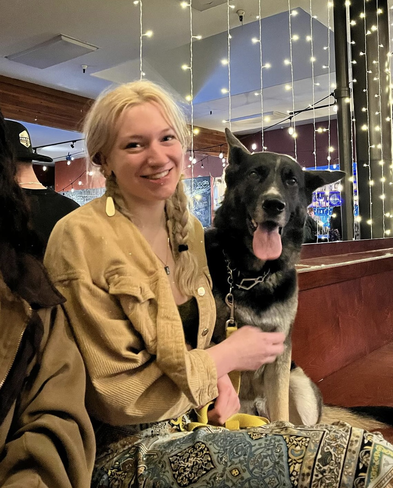

Willow Schmidt
Psychology (Intensive) · Cognitive Science · Statistics Minor
University of California, Santa Cruz
I grew up in the Bay Area, and for most of my academic career, I was not a good student. I never studied, would skip class, and only do the bare minimum to pass my classes. I never saw myself going to college, and only applied to UCSC as a business management & economics major, but was rejected. I ended up studying business at a local community college, Cabrillo College, but after about a year and a half, I realized that something needed to change, so I switched to psychology and started to really fall in love with school.
I finished at Cabrillo about a year and a half later with an A.A. in Psychology, as well as an A.A. in Liberal Arts & Sciences (interdisciplinary emphasis), and finally transferred to UCSC.
My first class, Research Methods, made it immediately clear this was where I was supposed to be, and I started thinking about the possibility of graduate school for the first time.
Since then, I have added Cognitive Science as an additional major, switched to the intensive route (compared to the general route) for Psychology to prepare for grad school, and added a Statistics minor.
I hope to continue to prove that I was never a dumb student, just an unmotivated one.
My primary interest is in social psychology, particularly the psychology behind gender, sexuality, and cultural norms.
I am currently working on an ongoing examination of hegemonic masculinity and its psychological costs for men who don't conform to rigid gender norms, as well as the rise of the "manosphere", "incel" culture, and the newly trending "looksmaxxing".
I am also continuing to develop research on college students' use of generative AI (click here to learn more). I presented this research at the Cornell Undergraduate Psychology Conference in April 2026 and am continuing to develop it, with a focus on harm reduction strategies for mitigating the cognitive effects of AI use among college students.
Other areas of interest include psychedelic-assisted therapy, online communities and parasocial relationships, and the psychology of the "male loneliness epidemic."
My name is Willow Schmidt, I am 22, originally from the Bay Area, and have lived in Santa Cruz for four years. Most of my family is from Germany, so I grew up speaking English and German, and I am slowly working on Spanish.
One of my greatest passions is art, and I was on track to go to art school before I realized that I did not want to turn my passion into a means of income. I mostly specialize in drawing and painting, but have tried almost all kinds of art forms, even tattooing. I try to create art whenever I have the time.
I started training in kickboxing and jiujitsu about a year and a half ago, and it's become one of the more important parts of my life. I would like to compete once I have more time, and I am hoping to get my blue belt before the year is over.
Around the time I started training, I got sober from alcohol, and I will be a year sober on June 25th, 2026.
Lastly, anyone who knows me knows that I come with a German Shepherd named Nala, who is my service dog. I suffer from fibromyalgia, which is a condition that causes chronic pain and fatigue, and Nala has been trained to help me with day-to-day tasks that are made more difficult due to my disability.
Overall, I think these are the things that sum me up pretty well outside of school. I am incredibly thankful to be where I am today, and feel that the more I learned about psychology, the more I was able to understand the world around me.
